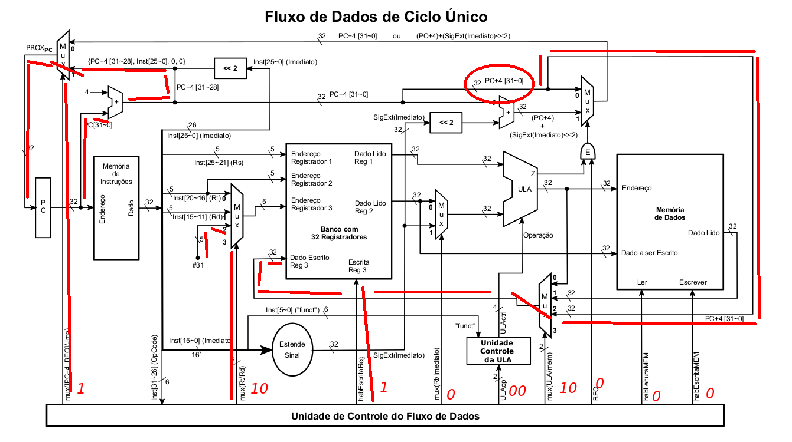
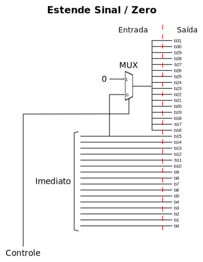

Explique como alterar o fluxo de dados do MIPS, para adicionar a instrução lui.
Fluxo de Dados MIPS
O fluxo de dados deve ser alterado como mostrado abaixo.
Fluxo de Dados MIPS com LUI
O módulo que estende zeros para o LUI deve funcionar da seguinte forma:
Os pontos de controle devem ser como mostrado na tabela abaixo.
Pontos de Controle para a Instrução LUI
Ponto de Controle
Valor
mux([PC+4,BEQ]/Jump)
0
mux(Rt/Rd)
0
HabEscritaReg
1
mux(Rt/Imediato)
X
ULAOp1
X
ULAOp0
X
mux(ULA/mem) bit 1
1
mux(ULA/mem) bit 0
1
BEQ
0
HabLeituraMEM
0
HabEscritaMEM
0
A instrução JR (jump register) tem o funcionamento mostrado abaixo.
PC=R[rs]
O seu formato segue a tabela mostrada abaixo, onde RRRRR é o endereço do registrador que contém o endereço para o jump.
Formato da Instrução JR
opCode
rs
rt
rd
shamt
funct
000000
RRRRR
00000
00000
00000
001000
Qual seria o esboço do circuito para atender somente a essa instrução?
O esboço a seguir é capaz de executar a instrução JR.
Detalhe da Implementação da Instrução JR
Como o jr é uma instrução do tipo R, devemos alterar a unidade de controle para que essa instrução não ative o habEscritaReg.
Para a execução do jr, é necessário que ocorra a leitura do banco de registradores, portanto, a execução do jr deve acontecer na etapa ID.
O funcionamento da instrução JAL (jump and link) está definido abaixo:
jal : R[31]=PC+4; PC=JumpAddr;
Formato da Instrução JAL
opCode
endereço
6 bits
26 bits
Consulte o Green Card para mais detalhes e sobre a definição de JumpAddr.
O fluxo abaixo é capaz de executar a instrução JAL?
Caso sim, qual a palavra de controle para essa instrução?
Fluxo de Dados MIPS
Sim, o fluxo de dados é capaz de executar a instrução JAL.
Execução de JAL
Ponto de Controle
Valor
mux([PC+4,BEQ]/Jump)
1
mux(Rt/Rd) bit 1
1
mux(Rt/Rd) bit 0
0
HabEscritaReg
1
mux(Rt/Imediato)
X
ULAOp1
X
ULAOp0
X
mux(ULA/mem) bit 1
1
mux(ULA/mem) bit 0
0
BEQ
0
HabLeituraMEM
0
HabEscritaMEM
0

Funcionamento da Instrução JAL
Como o JAL é uma instrução do tipo J, deverá ser executada na etapa ID.
O funcionamento da instrução ORI (or with imediate value) está definido abaixo:
ori : R[rt] = R[rs] | ZeroExtImm;
Onde: ZeroExtImm = { 16{1b’0}, immediate }
O fluxo abaixo é capaz de executar a instrução ORI?
Caso sim, qual a palavra de controle para essa instrução?
Fluxo de Dados MIPS
Sim, o fluxo de dados é capaz de executar a instrução ORI.
Execução de ORI
Ponto de Controle
Valor
mux([PC+4,BEQ]/Jump)
0
mux(Rt/Rd)
0
ORI
1
HabEscritaReg
1
mux(Rt/Imediato)
1
Tipo R
0
mux(ULA/mem)
0
BEQ
0
HabLeituraMEM
0
HabEscritaMEM
0
O módulo Estende Sinal deve ser alterado da seguinte forma:

Estende Sinal com ORI
Deve ser usado o esquema de unidade de controle com três decodificadores, como mostrado abaixo.
Unidade de Controle da ULA
Para o tratamento do ORI, o decodificador de opCode para ULActrl deve conter a seguinte decodificação:
Decodificação do opCode do ORI
opCode
ULActrl
001101
001
COD 4Ed Ex. 4.15
A instrução beqm faz um desvio condicional:
Para o endereço de memória contido no registrador Rd;
Se o conteúdo da posição de memória definida pela indexação feita através:
Do conteúdo do registrador definido por Rs, somado com um valor de deslocamento implícito na instrução;
For igual ao conteúdo de Rt.
Instrução BEQM
beqm Rd, Rt, Offset(Rs)
If ( Rt == Mem[Offset + Rs] ) then PC = Rd
Seria possível executar essa instrução, no MIPS DLX, sem alteração de hardware?
Caso sim, justifique!
Caso não, seria possível emular com as instruções existentes?
Apesar dessa instrução ser similar ao lw (até o fim do estágio MEM), ela precisa que existam algumas alterações:
Um novo estágio para fazer a comparação com o valor de Rt;
Mais uma entrada no MUX do PC, para poder receber o valor de Rd;
A seleção desse MUX deve considerar o resultado da comparação;
Como essa instrução faz a leitura de 3 registradores, precisaremos de mais uma porta de saída no banco de registradores.
Uma solução seria utilizar o código abaixo para emular essa instrução no MIPS estudado.
lw Rtmp, Offset(Rs)
bne Rtmp, Rt, Saida
JR RdSaida:
A instrução BLEZ (branch if less than or equal to zero) está definida abaixo:
blez : PC += ([rs]≤0) ? 4+distância : 4);
(a distância é calculada da mesma forma que no BEQ)
Formato da instrução:
Formato da Instrução BLEZ
opCode
rs
rt = 00000
desvio
6 bits
5 bits
5 bits
16 bits
Considerando a ULA abaixo:
ULA com BLEZ
Pergunta-se:
Ela seria capaz de executar essa instrução?
Caso sim, qual deve ser o estado de cada ponto de controle para a execução?
Sim, ela é capaz de executar.
Pontos de Controle
Inverte_A
Inverte_B
C_in
Seleção
0
X (0 ou 1)
Mesmo valor de B
10
O fluxo de dados, abaixo, implementa as 9 funções básicas:
ADD, SUB, AND, OR, SLT, LW, SW, BEQ e J.
Fluxo de Dados MIPS
Suponha que ele possui um defeito de fabricação e algum ponto de controle está sempre em 0.
Quais instruções serão afetadas quando o ponto de controle for “habEscritaReg”?
Quais instruções serão afetadas quando o ponto de controle for “habEscritaMEM”?
HabEscritaReg afetará as instruções:
ADD, SUB, OR, AND, SLT e LW.
HabEscritaMEM afetará a instrução:
SW.
Por um erro do seu parceiro de grupo, o MIPS monociclo, abaixo, teve a porta AND trocada por uma porta XOR.
O que esse erro alterará na execução das instruções:
a) BEQ?
b) BNE?
Fluxo de Dados MIPS
a) Como A xor B = 1 quando A ≠ B: necessitamos que as duas entradas dessa porta sejam diferentes.
Na instrução BEQ, o ponto de controle BEQ será 1 e BNE será 0 (escolhendo a entrada Z do mux Z/NotZ).
Nesse caso, como uma das entradas da porta XOR tem o valor 1 (vindo da saída da porta OR entre BEQ/BNE), para que a seleção do mux após o XOR seja a correta (valor 1):
O valor da saída Z da ULA deverá ser 0, indicando que os registradores possuem valores diferentes.
Conclusão: a instrução BEQ irá desviar quando não deveria.
b) Como A xor B = 1 quando A ≠ B: necessitamos que as duas entradas dessa porta sejam diferentes.
Na instrução BNE, o ponto de controle BNE será 1 e BEQ será 0 (escolhendo a entrada NotZ do mux Z/NotZ);
Nesse caso, como uma das entradas da porta XOR tem o valor 1 (vindo da saída da porta OR entre BEQ/BNE), para que a seleção do mux após o XOR seja a correta (valor 1):
O valor da saída Z da ULA deverá ser 1, consequentemente NotZ = 0, indicando que os registradores possuem valores iguais.
Conclusão: a instrução BNE irá desviar quando não deveria.
Ex. 4.15 - COD 4Ed
A instrução addm faz a soma:
Do conteúdo do registrador definido por Rt;
Com o conteúdo da posição de memória definida pela indexação feita através:
Do conteúdo do registrador definido por Rs, somado com um valor de deslocamento implícito na instrução;
E armazena no registrador definido pelo valor Rd.
Instrução ADDM
addm Rd, Rt, Deslocamento (Rs)
→
Rd = Rt + Mem[Deslocamento + Rs]
Seria possível executar essa instrução, no MIPS DLX, sem alteração de hardware?
Caso sim, justifique!
Caso não, seria possível emular com as instruções existentes?
Fluxo de Dados MIPS
Não é possível executar addm sem fazer alterações no processador.
Para emular essa instrução, podemos usar o código abaixo:
lw rX, deslocamento(rs)
addrd, rt, rX
A instrução LWI (load word indexed) funciona da seguinte forma:
Funcionamento de LWI
lwi Rd, Rt(Rs)
Reg[Rd] = Mem[Reg[Rt]+Reg[Rs]]
Considerando o fluxo de dados e unidade de controle, que implementa as 9 instruções estudadas, mostrado abaixo, escolha a alternativa correta.
Fluxo de Dados MIPS
Opções:
A: Esse fluxo de dados é capaz de executar essa instrução. Será necessário alterar a unidade de controle.
B: Esse fluxo de dados é capaz de executar essa instrução sem qualquer alteração na unidade de controle.
C: Para executar essa instrução é necessário modificar o fluxo de dados e a unidade de controle.
D: Para executar essa instrução é necessário modificar somente o fluxo de dados.
Esse fluxo de dados é capaz de executar essa instrução.
Porém, será necessário alterar a unidade de controle.
Fluxo de Dados MIPS
Ferramenta Auxiliar: Conversor Binário para Decimal (com ou sem sinal)